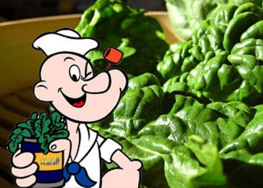

Empanadas de espinaca

Empanadas riquisimas rellenas de espinaca, a Popeye le re va la espinaca
Ingredientes:
- 1/2 Vaso de agua
- 1 vaso pequeño de aceite de oliva virgen extra
- 350g de harina
- 1 huevo
- Sal
- Te da fiaca todo no? Bueno, te hice leer todo al cuete porque también podés comprar tapas de empanadas y fue
Para la masa:
- 200g de espinaca fresca
- 2 huevos
- Sal
Para el relleno:
- Para preparar la masa de las empanadas (si no fuiste a comprar las tapas): mezcla el agua con el aceite de oliva virgen extra y una pizca de sal. Agrega la harina poco a poco y mandale todo con las manos, hasta que quede una masa a tal punto que no se pegue en las manos. Si te pinta, añadí algo más de harina.
- Envuelve la masa con papel film transparente y deja reposar durante 1 hora.
- Lava bien las espinacas frescas para eliminar los posibles restos de tierra y cuécelas al vapor. Cuece los huevos; pélalos y córtalos en daditos.
- Pon una sartén al fuego con la cebolla cortada en juliana fina y unas cucharadas de aceite de oliva. Rehoga 4 minutos y añade las espinacas. Sala y cocina hasta que se evapore el agua de las espinacas. Retira del fuego y añade los huevos cocidos picados.
- Ahora vas extendiendo la masa con un rodillo para que quede bien fina. Luego, empezá a cortar en circulos
- Coloca en una de las mitades de la masa la mezcla de espinacas. Moja los bordes con un poco de agua y dobla la masa. Presiona un poco los bordes para que queden bien cerrados.
- Pinta la superficie de las empanadillas con huevo batido. Introdúcelas en el horno precalentado a 180 ºC hasta que se doren.
Bueno rey, como lo preparamos?:

Popeye